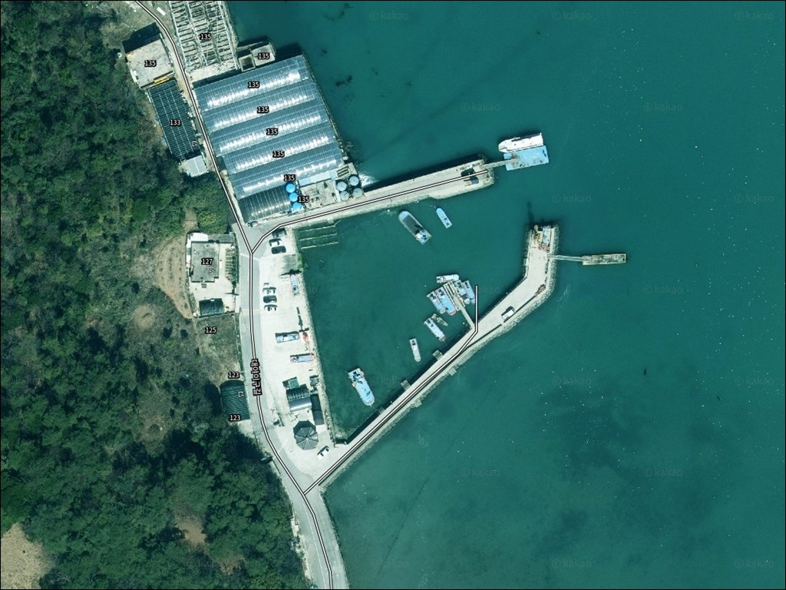
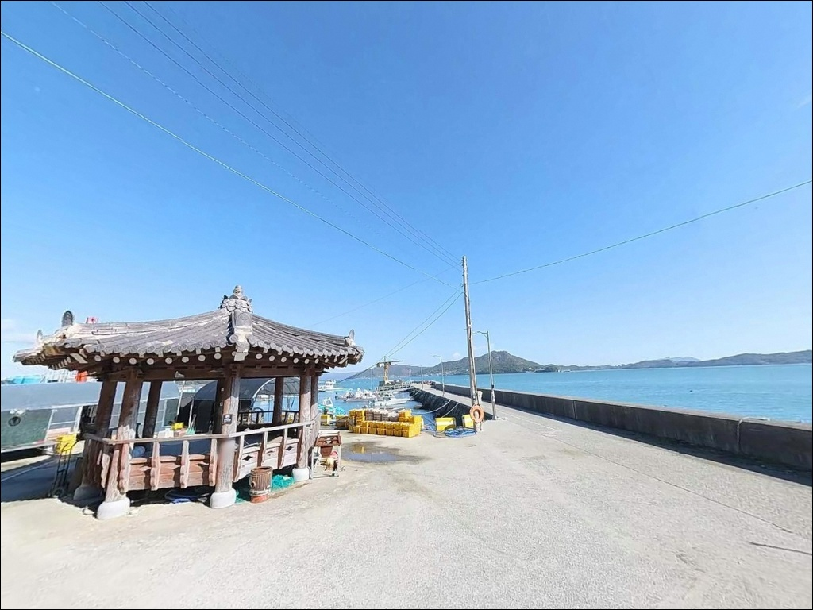
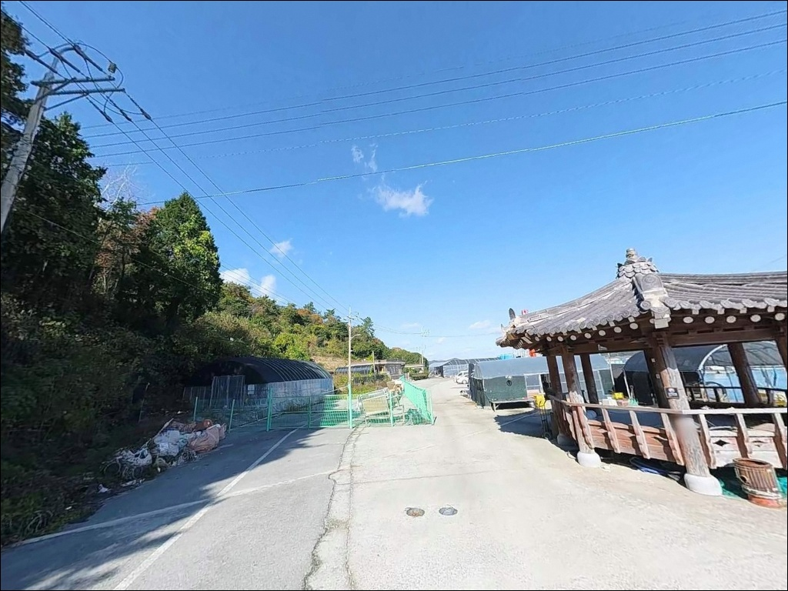
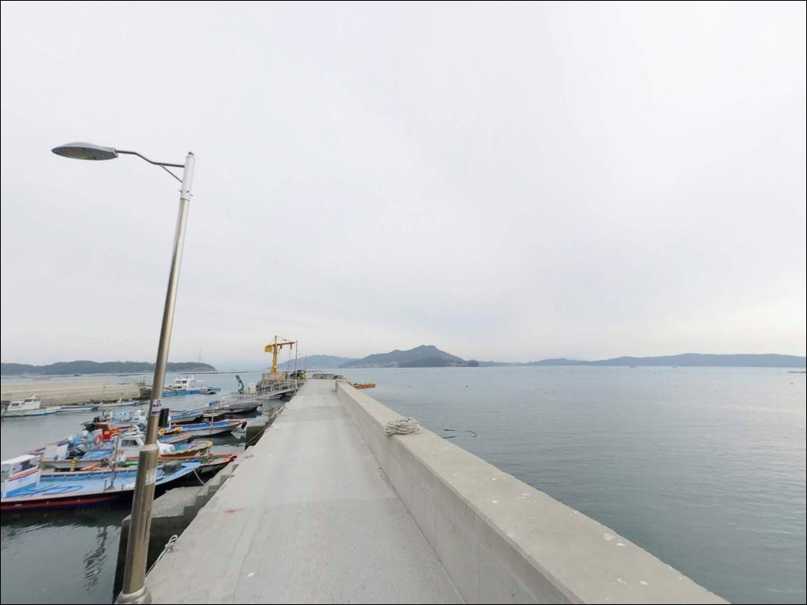
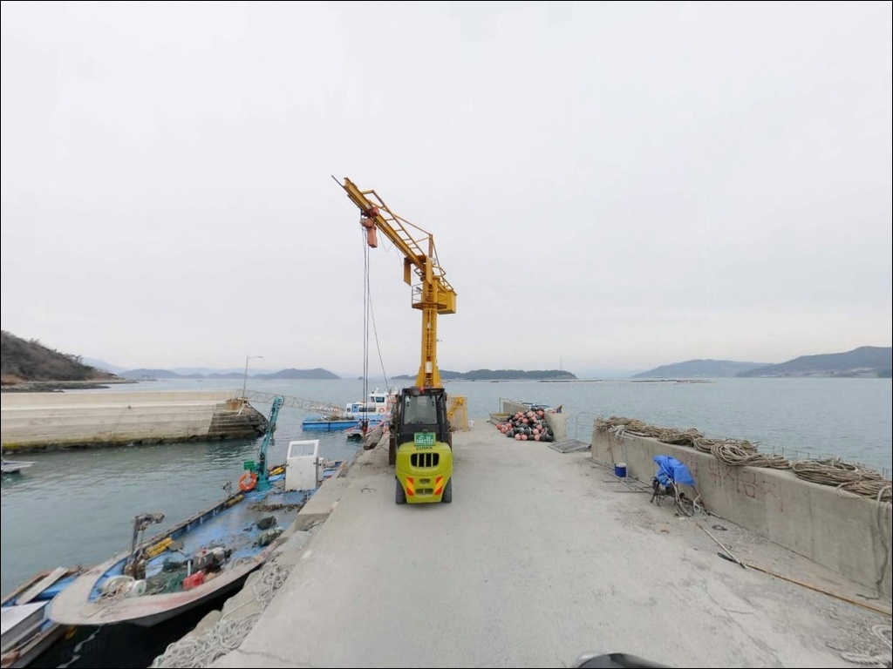
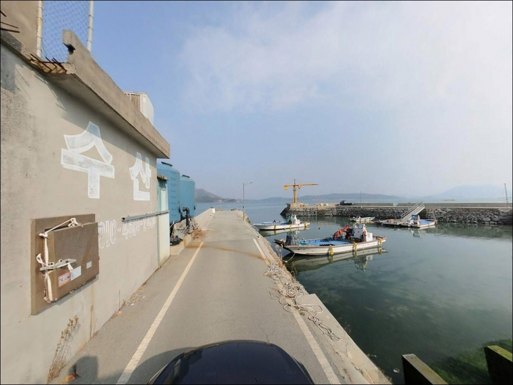
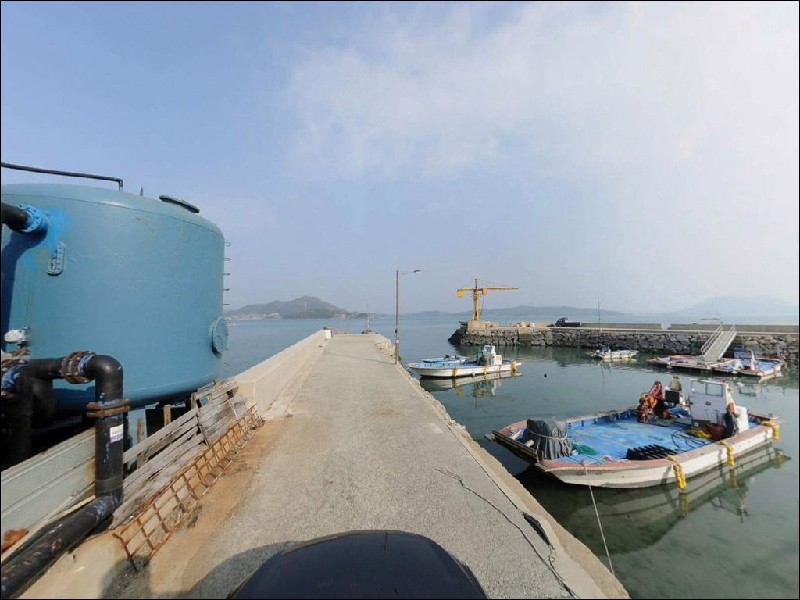
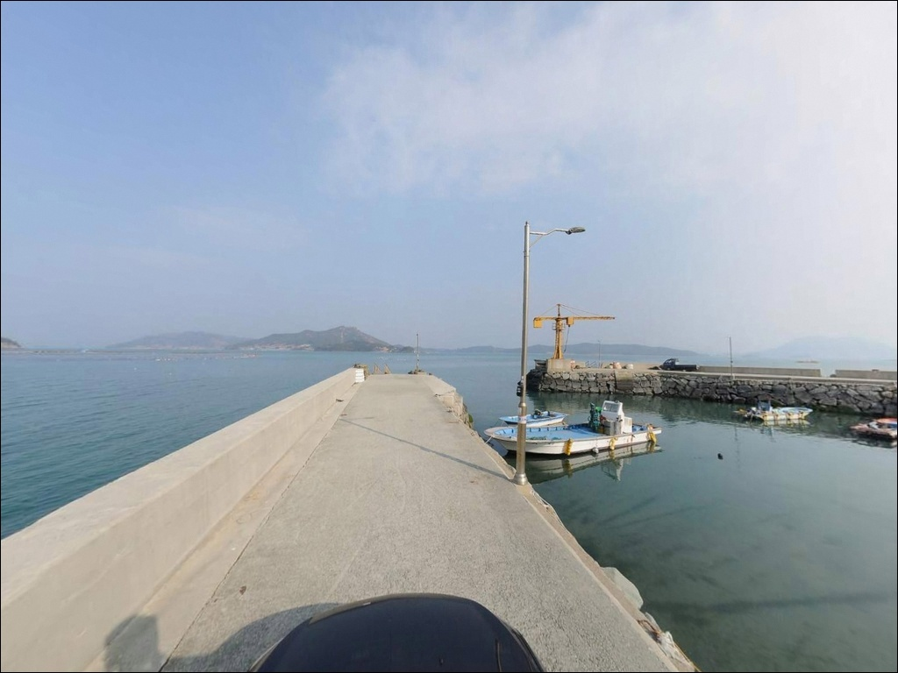
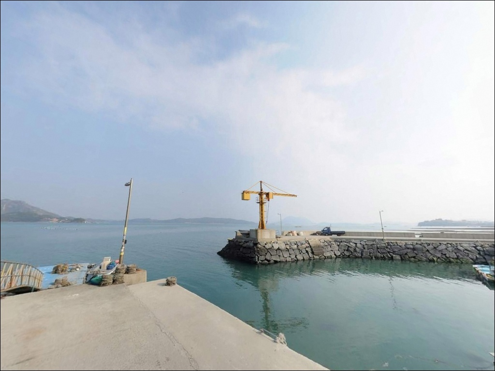

대야리선착장, 전남 완도군 조과 보장되는 핫플레이스 바다 차박 낚시 포인트
이 페이지에는 광고(제휴 링크 포함)가 있으며, 광고 링크를 통해 구매하면 운영자가 판매 수익 또는 수수료를 받을 수 있습니다. 포인트 사진: 카카오맵 스카이뷰·로드뷰. 이 페이지의 지도·사진 이미지는 카카오맵의 실제 서비스 이미지와 다를 수 있습니다.


포인트 안내
대야리선착장 (대야방파제)
전남 완도군 완도읍 대야리 산 1-16
물때 확인 없이 대야리선착장에 도착하면
간조 전후 수심이 거의 사라져
채비를 던질 공간 자체가 만들어지지 않습니다.
대야방파제는 수심 -0.7~0m, 저질 펄인 구조로,
들물이 차오르는 타이밍에만
낚시 여건이 형성되는 포인트입니다.
완도 본섬 북동쪽에 자리한 이 선착장은
사후도 도선이 출발하는 마을 포구이기도 합니다.
규모는 작지만 50cm급 양태가
원투에 올라온 실적이 있는 곳으로,
조류 흐름이 살아나는 들물 구간의
잠재력이 있는 포인트입니다.
이 글은 대야리선착장의 물때 판단 기준,
지형 특성, 차박 여건,
어울리는 낚시 스타일에 집중합니다.
조황 단정이나 특정 어종 보장은
이 글의 범위에 포함되지 않습니다.

1. 진입 동선과 포인트 접근성
완도읍 시가지에서 대야리 방면으로 이동하면
마을 안길을 통과하는 구간이 나옵니다.
이 진입로는 폭이 넓지 않은 농어촌 도로 수준으로,
막바지 포구 연결 구간까지
소형~중형 차량 기준으로 접근이 가능한
구조입니다.
선착장 끝단은 회차 공간이 좁은 편이라
대형 SUV나 캠핑 장비를 실은 차량이라면
출발 전 위성지도로 진입로 전 구간을
확인해 두는 것이 좋습니다.
어선 접안 활동이 이루어지는 공간이므로
어업 차량 동선을 막지 않는 자리에
주차하는 것이 기본입니다.
주차 후보는 선착장 입구 공터와
방파제 진입 전 도로변으로,
1~2대 수용이 가능한 수준입니다.
정식 주차장은 별도로 확인되지 않으며,
사후도 도선 대합실 주변의 공지를
활용하는 방식이 현실적입니다.

2. 차박 환경과 야간 체류 여건
대야리 마을은 소규모 어촌 기반으로
야간 차량 통행이 많지 않은 편입니다.
민가가 인접한 구조라 완전한 고립감은 없지만,
가로등 수가 많지 않아
개인 조명 장비는 필수 수준으로
챙겨야 합니다.
선착장 주차 공간이 1~2대 규모로 좁기 때문에
차박을 메인으로 삼기보다는
낚시를 마치고 조용히 하룻밤 머무는 형태가
이 포인트 조건에 맞습니다.
북동쪽으로 열린 만 안쪽 구조지만
기상에 따라 바람 영향이 있을 수 있어
출발 전 기상 확인은 빠트리지 않는 편이 좋습니다.


3. 주변 편의시설 및 인프라 현황
대야리선착장 반경 3km 이내에는
편의점이나 마트를 기대하기 어렵습니다.
완도읍 중심부까지의 거리가 4~6km 수준으로,
농협하나로마트와 편의점은 읍내 방향으로
이동해야 이용이 가능합니다.
완전 자급 체제로 진입하는 것이
현실적인 준비 방식입니다.
낚시 용품이 부족한 경우에는
죽청리 방면 낚시점(약 2.5km)이
대안이 될 수 있습니다.
완도읍 내에도 낚시점이 여러 곳 확인되므로
채비 소모가 잦은 펄 바닥 포인트 특성상
여분 채비는 출발 전에 충분히
준비하는 편이 낫습니다.

4. 방문 전 반드시 챙겨야 할 준비사항
이 포인트에서 가장 먼저 확인할 것은 물때입니다.
바다타임에서 완도 기준 물때를 확인하고,
초들물 시작 시각을 역산해 출발 시각을 맞추는 것이
기본 전략입니다.
간조 전후에 도착하면
아무리 오래 기다려도
낚시 여건이 만들어지지 않는 구조입니다.
펄 바닥 저질 특성상 채비가 바닥에 묻히기 쉬워
원투 시 여분 봉돌과 바늘을 넉넉하게 챙겨야 합니다.
야간 낚시를 계획하고 있다면
헤드랜턴과 구명조끼는 기본이며,
마을 포구인 만큼
어선 입출항 시간대에는 소음과 채비 정리에 주의해야 합니다.
완도 해역은 기상 변화가 빠른 편이라
당일 아침 기상청 예보를
한 번 더 확인하는 것이
빈손 귀가를 막는 기본 절차입니다.

5. 낚시 포인트 선정 전 확인해야 할 지형 조건
대야리선착장의 지형 핵심은
수심 -0.7~0m의 펄 바닥 구조입니다.
이 수치는 간조 기준면 대비 수치로,
썰물이 빠진 상태에서는 바닥이 드러나거나
채비가 펄에 묻히는 상황이 발생합니다.
들물이 차오르면서 수심이 확보되는 구간부터
낚시 여건이 형성되는 구조입니다.
선착장은 완도 본섬 북동쪽에서
대야천 하구와 인접한 만 안쪽에 자리합니다.
펄 바닥 구조는 원투 시 채비 묻힘을 유발하지만,
조류가 흐르는 들물 구간에는
바닥층 어종의 먹이 활동이 활발해지는
조건이 갖춰집니다.
완도 해역 특성상 사리 전후에는
조류 속도가 상당히 빨라지는 편입니다.
인근 장좌리 방파제가 562m 거리에 있고,
같은 해안선에 포인트가 다수 분포합니다.
대야리선착장은 그 중에서도
낚시 압박이 낮은 한적한 포인트 성격으로,
온라인 조황 정보가 많지 않은 만큼
출조 전 최신 조황 검색이 더욱 중요합니다.
"완도 대야리 방파제 낚시"로 검색해 보는 편이 좋습니다.
대야리선착장은 초들물 타이밍을 놓치면
하루 낚시 전체가 흔들리는
물때 의존형 포인트입니다.


6. 포인트에 어울리는 낚시 스타일
이 포인트에서 가장 먼저 고려할 방식은
야간 원투낚시입니다.
펄 바닥 저질을 선호하는 붕장어 특성상,
야간 들물 구간에 원투 채비를 운용하면
기대해볼 수 있는 조건이 갖춰집니다.
50cm급 양태가 원투에 올라온 실적이 있는 포인트이기도 해,
들물 타이밍의 원투 공략은 이 포인트에서
기본 운용 방식입니다.
릴찌낚시나 민장대 방식도
이 포인트 수심 조건에 맞는 스타일입니다.
수면 가까이에서 먹이 활동이 활발한
숭어 공략에 어울리며, 봄~가을 들물 타이밍에
조류가 흐르는 방향으로 찌를 흘리는 방식이
펄 바닥 묻힘을 피하면서
효율적으로 공략하는 방법입니다.
감성돔 찌낚시는 봄과 겨울 들물 구간에
기대해볼 수 있는 스타일입니다.
조류가 살아나는 초들물 이후 구간이
찌낚시 여건에도 맞아떨어지는 타이밍입니다.
여름~가을 해질녘에는 방파제 끝단에서
소형 루어로 농어를 노리는 방식도
이 포인트 구조에 어울리는 선택지입니다.
펄 바닥 저질은 야간 원투 붕장어 낚시에
오히려 유리한 조건으로 작용합니다.

7. 대안 포인트와 플랜 B 동선
대야리선착장이 기대에 못 미친다면
가장 먼저 이동할 곳은
장좌리 방파제입니다.
562m 거리로 도보 이동도 가능한 수준이며,
같은 해안선에서 비슷한 조류 패턴을 공유하는
포인트입니다.
조건이 더 안정적인 포인트를 찾는다면
씨월드 방파제(약 4.7km)가
적합한 대안입니다.
저질이 암반 바닥이고 수심이 0~2m로
대야리선착장보다 낚시 여건이 넓은 편이며,
완도 대표 낚시 포인트 중 하나로
대야리 조건이 맞지 않는 날의 기본 대안이 됩니다.
죽청리 방파제(약 2.4km)도
같은 해안선 권역에서
기대해볼 수 있는 포인트입니다.
원정형 공략을 원한다면
금당도나 보길도로 이동하는 방식도
완도권에서 선택할 수 있는 동선입니다.

들물을 알면
대야리선착장이 달라 보입니다
야간 원투낚시나 릴찌낚시를 즐기는 낚시인 중
한적하고 낚시 압박이 낮은 포인트를 원한다면
대야리선착장은 맞는 구조입니다.
온라인 조황 정보가 많지 않아
직접 답사와 물때 계산이 선행되어야 하는 포인트지만,
들물 타이밍을 맞추면
의외의 조과가 나오는 사례도 있는 곳입니다.
반면 물때 확인 없이 찾아가거나
편의시설을 기대하고 간다면
빈손 귀가로 이어지기 쉽습니다.
물때 확인, 여분 채비 준비, 진입로 사전 점검,
이 세 가지가 대야리선착장 방문의 기본 조건입니다.
주차 공간이 좁아 혼자 또는 둘이서 조용히 낚시하고
하룻밤 머무는 형태에 더 잘 맞는 포인트로,
완도 해역 특유의 조류와 펄 바닥이 만드는
들물 낚시를 경험해보고 싶은 낚시인에게 어울리는 곳입니다.